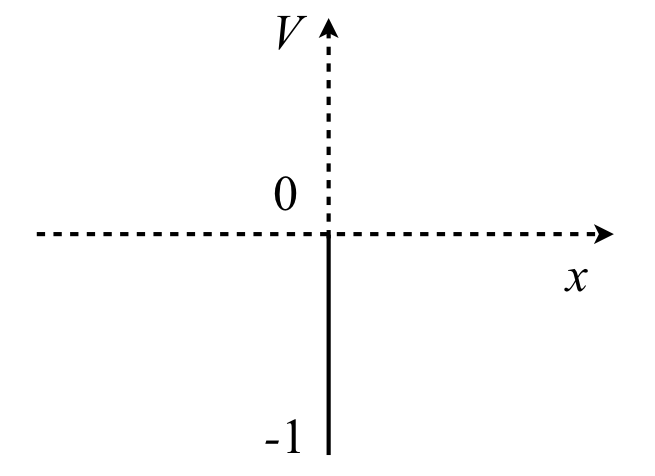

9 The Variational Method in Quantum Mechanics
Contents
9 The Variational Method in Quantum Mechanics#
# import all python add-ons etc that will be needed later on
%matplotlib inline
import numpy as np
import matplotlib.pyplot as plt
from sympy import *
init_printing() # allows printing of SymPy results
plt.rcParams.update({'font.size': 16}) # set font size for plots
9 The Variational Method#
The variational method has been widely used in quantum chemistry to obtain the energy levels of polyatomic molecules and other similarly complicated problems. This method, also called the Rayleigh-Ritz method, is an approximate way of obtaining energies where no exact solution is possible. The result of the calculation is an energy that is always greater than the true, or exact energy, and this is extremely useful as better approximations can only become closer to the true energy.
If an exact quantum calculation has ground state energy \(E_0\) and wavefunction \(\varphi_0\), the Schroedinger equation is \(H\varphi_0 = E_0\varphi_0\). The Variational Theorem asserts that for any trial wavefunction \(\psi\) that is perhaps related to, but is not \(\varphi_0\), the energy is always equal to or greater than its true value even though this may not be known.
To obtain the energy \(E_V\) we left multiply the Schroedinger equation with the trial wavefunction and integrate. The energy can be obtained by rearranging and is
This means that the energy \(E_V\), calculated with any trial wavefunction \(\psi\), cannot be lower that the ground state energy \(E_0\), calculated with the same Hamiltonian \(H\) using \(H\varphi_0 = E_0\varphi_0\). The calculation to find \(E_0\) may not be possible and this will be unknown, but \(E_V\) can still be found as an approximation to \(E_0\) even if the integration has to be done numerically. This is important, for in a complicated molecule with many nuclei and even more electrons, solving the Schroedinger equation exactly is not possible in principle even with enormous multiprocessor computers. The variational method, however, allows us to approximate the energy and most importantly, the approximate energy is never lower than the true one; this is what makes this method useful. Initially, the wavefunction \(\psi\) is usually a guess based on intuition. Better guesses of \(\psi\) will make the left-hand side of equation 47 closer to the true value \(E_0\), which means in practice that a lower and lower value of the energy is calculated which asymptotically approaches, but never falls below, the true energy.
The variational principle minimizes the total energy, the sum of the kinetic and potential energies. This total energy is varied to find its minimum and this is done by differentiation. The total energy is reflected in the shape of the wavefunction and so the variational parameter used, \(a\), is a parameter that defines the shape of the wavefunction that we guess, for example as a gaussian \(\psi = e^{-ar^2}/a^3\) or as the amount of one wavefunction vs another as in a linear combination \(\psi = a\varphi_1 + \varphi_2\). Although any fantastical function can be chosen as a wavefunction, those leading to a good value of the minimum energy when compared with a known solution are those that represent wavefunctions in some general way. These are single valued, do not have discontinuities and tend to zero at infinity.
The variational calculation is done in five easy steps:
(a) Guess a function to be the wavefunction \(\psi\). This will depend on the problem at hand but starting with a wavefunction from a similar problem is often a good starting point. It must have at least one parameter that is to be varied to find the minimum energy.
(b) Using the total Hamiltonian,
where \(V(u)\) is the potential energy, which depends upon the problem being studied, calculate \(Hψ\). The kinetic energy is always
where \(m\) is the mass and \(u\) the appropriate positional coordinate, for example the Cartesians \({x, y, z}\) or polar coordinates \({r, \theta, \phi}\).
(c) Calculate the integrals in equation 47. This is probably the hardest part of the problem.
(d) When the equation for the variational energy \(E_V\) has been found in terms of the variational parameter \(a\), differentiate this to find the minimum energy; \(dE_V /da = 0\). If there is more than one parameter they must all be minimized.
(e) The value of \(a\) found is put back into the equation for \(E_V\) to obtain its minimum value. This will be the best approximation to the energy with the type of wavefunction chosen. Better or worse energies can be found with different wavefunctions.
9.1 A 1D example#
As a one-dimensional example, suppose that an electron is subject to a delta function potential that exists only at the origin (Szabo & Ostlund 1982). This potential is simple to deal with mathematically, but it is somewhat unrealistic: it could perhaps approximate a defect in a nanowire or an oxygen atom in a chain of carbons. The Schroedinger equation in atomic units (see chapters 1.15.3 & 11.10.2) is
and the delta function has the property that it is unity only when \(x\) is zero but is zero elsewhere. This simplifies the integration considerably because for any normal function \(f\),
and the delta function can be removed from the integral and replaced by the value of the function at \(x=0\)
(a) Let the trial wavefunction be \(\displaystyle \psi=e^{-ax^2}\) and the value of \(a\) will have to be found that minimizes the energy.
(b) In equation 48, the Hamiltonian is the term in brackets and acts on the wavefunction producing

Figure 21. A delta function potential with a value of \(-1\) at the origin.
(c) To use equation 47 the integrals have to be evaluated. The denominator, which ensures normalization, is
and the expectation integral \(\int\psi H \psi dx\) is
The \(-1\) comes from the integral of the delta function. The limits are \(\pm \infty\) and remaining integral is found using Sympy
a, x = symbols('a,x', positive = True) # use Sympy
eq = exp(-2*a*x**2)*(a-2*a**2*x**2)
integrate( eq, (x,-oo,oo) )
The variational energy is therefore
but this gives the energy in terms of \(a\), which is the variational parameter also called the Ritz parameter.
(d, e) To find the minimum energy, \(E_V\) has to be minimized. Differentiation with respect to \(a\) is
from which \(a = 2/\pi\). Substituting into \(E_V\) gives the energy as \(-1/\pi =-0.318\) fairly close to, but greater than, the true value of \(-0.5\) and not so bad considering the simplicity of the potential.
9.2 A semi-proof of the method#
A rigorous proof, which would be inappropriate here, rests on the mathematical foundation that an approximate solution to the Schroedinger equation can be written as a linear combination of the wavefunctions of an exact solution. To illustrate the method, and to show that the variational energy is always above the true energy, the starting point is the exact solution to the Schroedinger equation; \(H\varphi_i = E_i^0\varphi_i\) for energy levels \(i = 0, 1, 2, 3, \cdots\) The ground state energy is \(E_0\). The problem to solve approximately, using the variational method, has the same Hamiltonian and is \(H\psi_i = E_i\psi_i\). We start by guessing that the wavefunction \(\psi = a\varphi_1 + b\varphi_2\) will be a good solution provided coefficients \(a\) and \(b\) are optimized. The wavefunction \(\psi\) in this form is said to be ‘expanded in the basis set’ of just two normalized and orthogonal wavefunctions \(\varphi\).
The variational energy
where the * indicates the complex conjugate, which will be ignored from now on by assuming that the wavefunctions are real. The energy \(E_V\) has to be shown to be greater than \(E_0\). Expanding out the denominator, which is the normalization term, gives
and similarly for the numerator
To evaluate these integrals further the wavefunction normalization and orthogonality conditions have to be invoked. As \(\varphi\)’s are exact solutions of the Schroedinger equation they satisfy the orthonormality condition \(\displaystyle \int \varphi_1\varphi_1du=\delta_{1,2}\) where \(\delta\) is the Kronecker delta and has the properties \(\delta_{i,j} = 0\,(i \ne j);\, \delta_{i,j} = 1\,(i = j)\). Using these rules and the essential fact that because \(\varphi\) are exact solutions then \(\displaystyle \int \varphi_iH \varphi_jdu =\delta_{i,j} E_j^0\).
After substituting for the integrals the variational energy is
If \(E_0^0\) is now subtracted from both sides
It must be true that \(E_V - E_0 \ge 0\) because \(E_0\) is the ground state energy and \(E_1^0\) and \(E_2^0\) are levels with larger quantum numbers and are therefore higher in energy. Repeating the calculation with wavefunctions \(\varphi_0\) and \(\varphi_1\) or with larger linear combinations essentially produces the same result, which is that a linear combination, and by inference any other approximation, is never smaller than the true value for the lowest energy level. Further details on the variational theorem are to be found in most quantum and physical chemistry textbooks such as McQuarrie & Simon (1997), Levine (2001), or Atkins & de Paula (2006).